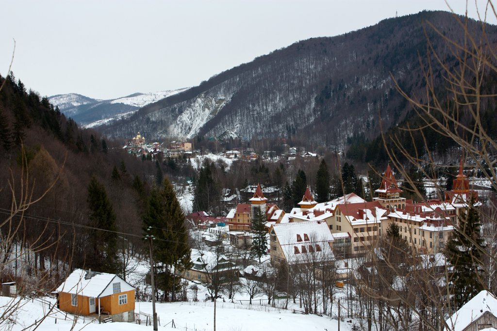

Дата і місце народження: 24.10.2003 м.Житомир
Освіта:
ЗОШ №28 м.Житомир
НТУУ "КПІ" м.Київ
Яремче - це чудове місто для відпочинку в Карпатах. Тут ви можете насолодитися красою природи, свіжим повітрям, мальовничими краєвидами та багатою культурою. Яремче пропонує різноманітні види активного та пасивного відпочинку: лижний туризм, велосипедні та піші походи, рафтинг, екскурсії, сауни, масажі та багато іншого. Ви також можете відвідати цікаві місця, такі як водоспад Пробій, музей "Барон - Музей Яремче", Карпатський національний природний парк, монастирі та церкви. Яремче має багато готелів, садиб, котеджів та інших типів помешкань, де ви можете знайти комфортне та затишне місце для перебування. Яремче - це місто, де ви забудете про свої проблеми та насолодитесь життям.
